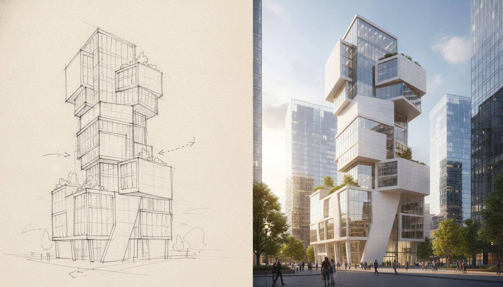

The pitch on the mnml.ai homepage is the kind of sentence that makes a working studio sit up: "Transform SketchUp, Revit, Blender, Lumion, Enscape, and V-Ray models into photorealistic CGI." Every other AI rendering tool in 2026 has picked a lane. Veras lives in the Chaos ecosystem. Rendair has gone deep on BIM. MyArchitectAI is a budget cloud service. mnml.ai is the one tool currently arguing that it can sit downstream of every modeler you own and feed every workflow you've got.
We took that claim seriously. Over five working days, we ran mnml.ai through a real mixed-use project at SD. Six exterior camera angles, three interior moments, and a handful of sketch-to-render passes from hand drawings. The model lives in SketchUp Pro, with Revit handoff for documentation and a Blender side-pipeline for landscape work. We hit mnml.ai from each entry point to see which integrations are first-class and which are marketing tags.
Cloud-based AI rendering with publisher integrations across SketchUp, Revit, Blender, Lumion, Enscape, and V-Ray. Strong on sketch-to-photoreal and SketchUp viewport ingestion. Weaker on the BIM-side integrations the marketing implies. Output quality lands in the same neighborhood as Veras and Rendair for exteriors at SD–DD.
The SketchUp path, where mnml.ai is at its best
If you're a SketchUp-first practice, mnml.ai is the most polished entry point. The plugin installs from the Extension Warehouse, signs in with your mnml account, and adds a sidebar that captures the current viewport as the input image. You pick a style preset (Day, Dusk, Editorial, Diagram-clean) and ship the render to mnml's cloud. Results come back in roughly 25 to 45 seconds at preview quality and 90 to 120 seconds at marketing quality.
The quality on our SketchUp exteriors was credibly close to Veras 4.0 on the same geometry. Material interpretation reads SketchUp's native paints and textures cleanly. Where Veras leans crisp and slightly cinematic, mnml.ai's default preset is softer and more daylit, which our project architect actually preferred for the SD-phase client presentation. Both tools handle the corten facade and copper-clad column inputs without prompt babysitting.
The one place where the SketchUp plugin still feels v1 is camera handling. mnml.ai renders the viewport you're currently looking at. If you've set up named scenes with specific framings, the plugin doesn't read them as a queue. You have to step through each scene, render, advance, render. For a six-view set, that's roughly four minutes of clicking instead of a batch. Veras handles this better. Rendair handles this better. We flagged it to mnml support and they confirmed batch ingestion is on the roadmap.
The Revit path, and where the marketing oversells
Revit is the integration the homepage leans on but the plugin doesn't fully deliver yet. There is a Revit add-in. It installs. It captures a viewport. What it doesn't do, at least at the version we tested, is read material assignments from the BIM model. Where Veras and Rendair both pick up your Revit materials as constraints, mnml.ai's Revit entry point flattens the model into a viewport image and treats it as essentially the same input as a SketchUp screenshot.
That's not nothing. The plugin still works. You still get a render. But the value proposition is closer to "captures your Revit viewport for AI rendering" than "renders your Revit model." If you're already running Enscape in Revit, the Enscape-to-mnml path actually produces better results than the direct Revit plugin, because Enscape's lighting and material interpretation gives mnml.ai a stronger input image. We'd recommend that flow for any architect coming in from a BIM-first stack.
The integration list is real. The depth of integration varies. SketchUp is first-class. Revit is essentially screen-grab plus AI.
The Blender and Lumion sidecars
Blender's integration is interesting because Blender users tend to be the most rendering-literate population in the architecture-adjacent world, and mnml.ai positions itself as cleaner finishing rather than full replacement. The add-on renders the active viewport (or a Cycles preview) and runs it through mnml's AI for atmospheric polish, sky replacement, foliage densification, and material cleanup. On our landscape sequences, the output was noticeably better than raw Cycles previews at low sample counts, and the round trip (Blender preview to mnml polish) was under two minutes per frame.
Lumion's integration is the lightest. There is no plugin. You export a still from Lumion, drag it into mnml.ai's web app, pick a refinement preset, and get a polished image back. It works. It's also functionally identical to using mnml.ai as a generic image-to-image tool, which most of its marketed integrations turn into upon inspection.
The V-Ray and Enscape integrations live in the same category. There's no special V-Ray plugin. You render in V-Ray, push the still into mnml.ai for finishing, and get back a touched-up output. For a studio already invested in V-Ray, that round trip can save 15 minutes per image versus a Photoshop polish. For a studio choosing between mnml.ai and a tighter Chaos pipeline, the integration is light enough that you'd choose Chaos every time.
Sketch-to-photoreal, the surprise win
The feature we didn't expect to like is mnml.ai's sketch-to-photoreal pass. Upload a hand sketch or marker drawing. Pick a target style. Get back a credible photoreal frame that respects the drawing's composition, geometry intent, and view angle. We've tested this category enough times to be skeptical, and mnml.ai's output is among the strongest we've seen. Close to ComfyUI with a properly tuned workflow, but a fraction of the setup cost.
On a courtyard moment from the SD set, the project architect handed us a marker sketch with rough massing, a tree, and a figure. mnml.ai's sketch-to-photoreal output came back with the geometry intact, the tree species credibly chosen for the climate (Northeast deciduous, which we hadn't specified), and a daylight read that respected the sketch's implied sun direction. The first pass needed two minor reprompts to fix a window pattern. Total time from sketch upload to client-ready frame: under eight minutes.
For early SD client meetings, the phase where you're still selling the moment and not the model, this is a workflow improvement. We've started using mnml.ai sketch-to-photoreal as the bridge between the napkin sketch and the first formal render set. Three years ago that bridge was a junior staff member with three hours and Photoshop.
How mnml.ai compares to the rest of the field
| Capability | mnml.ai | Veras 4.x | Rendair AI | MyArchitectAI |
|---|---|---|---|---|
| SketchUp plugin | First-class | First-class | Web upload | Web upload |
| Revit BIM materials | Viewport only | Material graph | Material graph | Viewport only |
| Sketch to photoreal | Strong | Available | Limited | Limited |
| Batch processing | Roadmap | Partial | Yes | Yes |
| Entry pricing | $19/mo | V-Ray bundle ~$80/mo | $29/mo | $15/mo |
| Output quality (SD-phase exteriors) | ★★★★☆ | ★★★★★ | ★★★★☆ | ★★★☆☆ |
Our take, where mnml.ai fits in 2026
mnml.ai is a strong choice for two specific kinds of studio. The first is the SketchUp-native practice that wants AI rendering without committing to the Chaos subscription stack. You get a polished SketchUp plugin, credible exteriors, sketch-to-photoreal as a real feature, all at a fraction of V-Ray Premium pricing. The second is the multi-tool studio that needs a single AI finishing layer downstream of multiple modelers, and is willing to accept that "integration" sometimes means "drop in a still and refine."
mnml.ai is a weaker choice for two profiles. BIM-first Revit shops will get more out of Rendair or the Chaos pipeline, where the material graph survives the handoff. And any studio doing high-volume cinematic work needs batch processing, which mnml.ai hasn't shipped yet.
The mnml.ai team is clearly building toward a real multi-DCC story. Today, the SketchUp side of that story is shipped, the Blender side is competent, and the Revit/Lumion/V-Ray sides are integration-by-screenshot. That's a reasonable place to be at this stage. If batch ingestion and proper Revit material-graph reading both land in the next two releases, mnml.ai becomes a top-three pick across the entire AI rendering category. Until then, it's a strong specialist tool with an unusually broad welcome mat.
If you're already on a Chaos-bundled workflow, mnml.ai isn't going to displace it. If you're a SketchUp practice picking your AI rendering stack from scratch, it deserves a free-tier trial this week, especially for the sketch-to-photoreal use case. Try it on one real project view, not on a generic test scene. That's where you'll see whether it earns a slot on your stack.
Tested by Vista Studios on a live SD-phase mixed-use scheme. No affiliate relationship with mnml.ai. Renders generated from production SketchUp and Revit models.